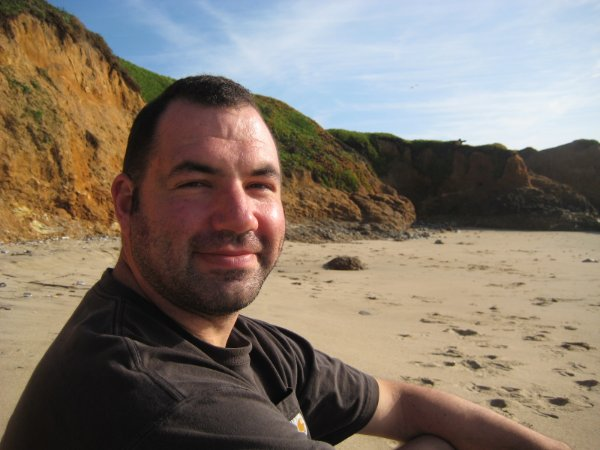

Silas Everett

Silas is graduating the MIDS program Spring 2019.
He currently lives in Berkeley, California, helping civic organizations leverage data to improve community services.
Rob Foster

Rob is graduating from the MIDS program in August 2018.
He currently works as an intern at a multi-state utility company, Xcel Energy, and lives in Denver, CO.